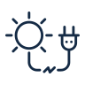

Автономні станції зрошення в кожен дім
Отримайте найсучасніше обладнання і будьте попереду
Як це працює
Системами автономного зрошення і водопостачання на сонячних батареях забезпечують полив сільськогосподарських угідь в районах, де відсутнє або утруднене живлення від електромережі.
Фотоелектричні установки також підходять для комбінованих систем поливу з генераторами. Вода може подаватися з колодязів, свердловин, водойм.

Переваги систем автономного зрошення
Повністю незалежні установки, що не потребують обслуговування і ручного управління
Устаткування наших систем є надійним та ефективним

Простота станцій обумовлює низькі ціни на комплекти

Абсолютна незалежність
Відчуйте повну незалежність від мереж енергопостачання. Сонячні електростанції – це майбутнє, що наступило на терени України. Ще 10 років тому люди мріяли про отримання безкоштовної електроенергії та бути повністю незалежними від енергетичних монополій держави.
Ми робимо усе для того, щоб замовник був задоволений нашою роботою та результатами побудованої нами сонячної електростанції.
Наш підхід до роботи
Ми проконсультуємо вас, виберемо найкраще обладнання і оформимо замовлення
Проектуємо 3D-модель розміщення СЕС, а також проводимо аналіз на стійкість конструкцій до вітрового та снігового навантаження
Розробляється вся необхідна документація і СЕС вводиться в експлуатацію
Сервісне та гарантійне обслуговування в будь-який час
Чому ми - найкращий вибір?
2016 рік став знаковим з точки зору переходу українців на чисті джерела енергії. Сонячна енергетика уже є самим дешевим джерелом енергії в багатьох державах світу в довгостроковій перспективі. Україна не є виключенням.
Компанія ТОВ «КС СОЛАР» підтримує даний напрямок розвитку та є офіційним представником в центральній Україні таких провідних компаній, як «УС СОЛАР» (м. Київ) та «РЕНТЕХНО» (м. Київ).


Наші переваги:
- Полив з колодязів, свердловин або відкритих водойм там, де відсутні централізоване електропостачання.
- Розгортання / згортання протягом 1 тижня.
- Сумісність з будь-якими насосами, з 3-фазними асинхронними двигунами.
- Невисокі разові інвестиції.
- Повний контроль через інтернет та простота обслуговування обладнання.
- Окупність за 4 сезони!